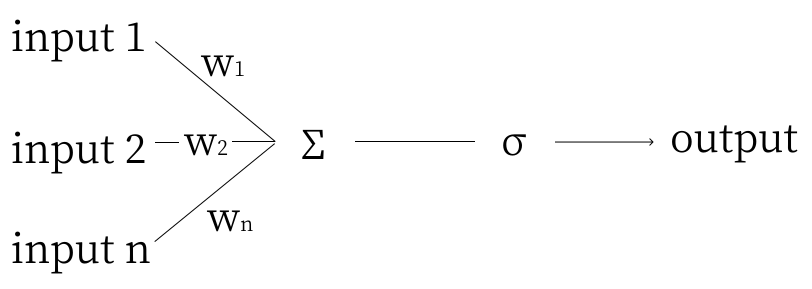
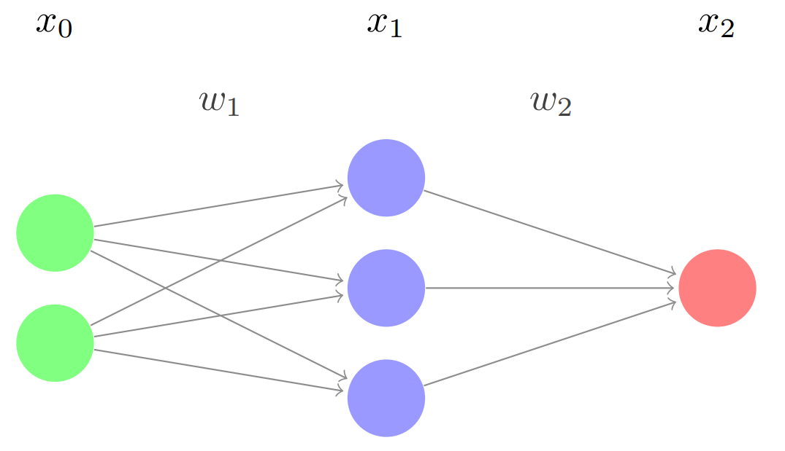
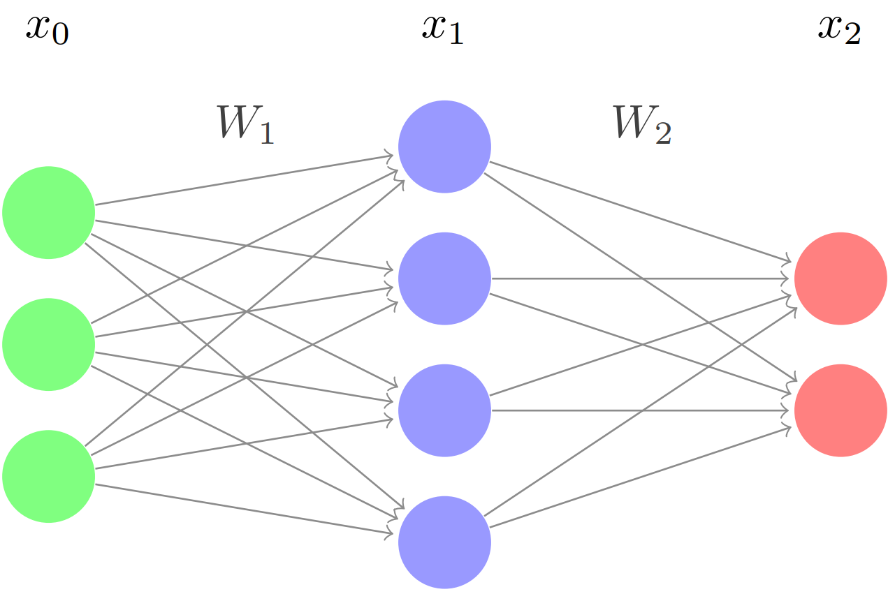
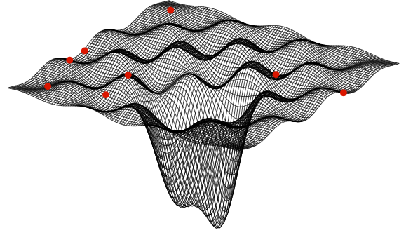

Neural Networks: Forward and Backpropagation
Alan Zheng
October 2018
Introduction
Introduction
We have covered Perceptrons, the fundamental unit of the Neural Network (See “Neural Networks: Introduction and Overview” for the previous lecture). Additionally, Multi-Layer Perceptrons, or Neural Networks, were introduced as a solution for approximating non-linearly separable data. This lecture continues exploring Neural Networks, but introduces vectorization for more efficient notation and computation. We also cover how neural networks learn, which is significantly more complex than the perceptron learning algorithm.
The Neuron
A single node of a neural network (a neuron) differs from a perceptron in one way: the activation function. Consider this diagram of a neuron:

The symbol \(\sigma\) represents the Sigmoid activation function \(\sigma(x) = \frac{1}{1 + e^{-x}}\).

Notice how as the coefficent of \(x\) approaches infinity, \(\sigma(x)\) approaches the step function from before. We use \(\sigma(x)\) is because it is differenciable, which is necessary for networks to learn. Other activation functions include \(\tanh(x)\) and ReLU, but we will use Sigmoid for our examples.
The rest of a neuron is identical to a perceptron: multipy each input by its weight, add them up and the bias and compute the activation function of the sum.
Forward Propagation
Non-Vectorized Forward Propagation
Forward Propagation is a fancy term for computing the output of a neural network. We must compute all the values of the neurons in the second layer before we begin the third, but we can compute the individual neurons in any given layer in any order. Consider the following network:

We denote the value of node i as \(n_i\), and the bias of node i as \(b_i\). Computing the network using these variables, we get: \[n_3 = \sigma(w_{13}n_1 + w_{23}n_2 + b_3)\] \[n_4 = \sigma(w_{14}n_1 + w_{24}n_2 + b_4)\] \[n_5 = \sigma(w_{15}n_1 + w_{25}n_2 + b_5)\] \[n_6 = \sigma(w_{36}n_3 + w_{46}n_4 + w_{56}n_5 + b_6)\] Continuing this example of forward propagation, let’s assign some numbers and compute the output of this network. Let \(n_1 = 0.2\) and \(n_2 = 0.3\). Let \(w_{13} = 4, w_{14} = 5, w_{15} = 6, w_{23} = 5, w_{24} = 6, w_{25} = 7, w_{36}=9, w_{46} = 10\) and \(w_{56} = 11\), just so they are easy to remember. Let all the biases \(b_{3..6} = 1\) (input nodes do not have biases, the “input nodes” are simply values given to the network). In practice, weights and biases of a network are initialized randomly between \(-1\) and \(1\). Given these numbers, we compute: \[n_3 = \sigma(4*0.2 + 5*0.3 + 1) = \sigma(3.3) = 0.964\] \[n_4 = \sigma(5*0.2 + 6*0.3 + 1) = \sigma(3.8) = 0.978\] \[n_5 = \sigma(6*0.2 + 7*0.3 + 1) = \sigma(4.3) = 0.987\] \[n_6 = \sigma(9*0.964 + 10*0.978 + 11*0.987 + 1) = \sigma(30.313) = 1\]
This example actually illustrates one of the weak points of the Sigmoid function: it quickly approaches 1 for large numbers. The reason for using the Sigmoid function will be shown in the section on backpropagation.
Vectorized Forward Propagation
Look again at these nodes of the network: \[n_3 = \sigma(w_{13}n_1 + w_{23}n_2 + b_3)\] \[n_4 = \sigma(w_{14}n_1 + w_{24}n_2 + b_4)\] \[n_5 = \sigma(w_{15}n_1 + w_{25}n_2 + b_5)\]
We can rewrite this as \[\begin{bmatrix} n_{3}\\ n_{4}\\ n_{5}\\ \end{bmatrix} = \sigma \Bigg( \begin{bmatrix} w_{13} & w_{23}\\ w_{14} & w_{24}\\ w_{15} & w_{25}\\ \end{bmatrix} \begin{bmatrix} n_{1}\\ n_{2}\\ \end{bmatrix} + \begin{bmatrix} b_{3}\\ b_{4}\\ b_{5}\\ \end{bmatrix} \Bigg)\] Notice how the nodes in each layer of the network are in their own column vector, in the order they appear. Let’s relabel this network by layers:

Here, \(x_0\) and \(x_2\) represent the input and output layers, and \(x_1\) is the middle layer (called a hidden layer). Mathematically speaking, these are represented as column vectors of dimension \(n\times1\), where \(n\) is the number of nodes in the layer. Thinking back to the non-vectorized network in section 3.1, \[x_0 = \begin{bmatrix} n_{1}\\ n_{2}\\ \end{bmatrix} \qquad x_1 = \begin{bmatrix} n_{3}\\ n_{4}\\ n_{5}\\ \end{bmatrix} \qquad x_2 = \begin{bmatrix} n_{6}\\ n_{7}\\ \end{bmatrix}\] \(w_1\) and \(w_2\) are the weight matrices. Thinking back to the non-vectorized network in section 3.1, \(w_1\) corresponds to \[\begin{bmatrix} w_{13} & w_{23}\\ w_{14} & w_{24}\\ w_{15} & w_{25}\\ \end{bmatrix}\] and \(w_2\) refers to \[\begin{bmatrix} w_{36}\\ w_{46}\\ w_{56}\\ \end{bmatrix}\] Each layer (except the input) also has a bias vector, which has the same dimension as the layer itself (each node has a bias). Again thinking back to the non-vectorized network in section 3.1, we define \(b_1\) to be \[\begin{bmatrix} b_{3}\\ b_{4}\\ b_{5}\\ \end{bmatrix}\] and \(b_2\) to be \[\begin{bmatrix} b_{6}\\ b_{7}\\ \end{bmatrix}\] We can now re-write the forward propagation formula in a far more compact form. In any \(n\) layer network, for a given layer \(x_{i+1}\) (assuming \(0\leq i<n-1\)): \[x_{i+1} = \sigma(w_ix_i + b_{i+1})\]
Backpropagation
Backpropagation is how neural networks learn. It is essential to not only understand the theory behind backpropagation, but also the mathematics behind it. This is one of the few mathetmatically rigorous sections of our material. (Of course, for anyone who has taken Multivariable calculus, the material should be relatively straightforward. Nevertheless, high school students not entirely comfortable with the math will no doubt have some trouble.)
Learning
A neural network learns when it is given training data and labels. The data (inputs) can be in the form of text, images, numbers, etc. The label is the ground truth, the correct answer for the given input. Given enough data-label pairs, a network can learn to generalize the relationship between the data and label. After training, it is tested or validated on a set of data it has never seen before (i.e. data not part of the training set). This validation accuracy shows just how well a network has learned to generalize through training. Backpropagation is the method of updating the weights and biases of the network to minimize the error when training.
Error
Consider the following network:

For the input \(x_0\), let \(y\) represent the target vector, or the ground truth. We define the error as \[E = \frac{1}{2}||x_2-y||^2\]
Essentially, this is the magnitude of the difference between the target and the network’s output. In order for a network to become more accurate, we want to minimize this error.
Let’s think of \(E\) as a function. Only \(x_2\) can vary, and we can only control this by changing the weight matrices (and the bias). Thus, for a neuron with \(n\) weights and a bias, the error can be graphed as an \(n+2\) dimensional function (\(y = f(x)\) has 1 input, so it is graphed in two dimensions). For this network, each of the weights (\(3*4 + 4*2 = 20\)) and the biases (\(6\)) determines the error, so the error has many, many dimensions. If we get to the minimum of this function, we have minimized the error and trained the network.
Gradient Descent
We can’t visualize that many dimensions (at least, I can’t), so lets pretend we are working with a three dimensional function. How to we get to the minimum? We use gradient descent, of course!

A multi-dimensional function. Look at that minimum!
Gradient descent is simple: Starting at some point, we move in the direction of steepest decline for a certain length. Then, at our new point, we again compute the direction of steepest decline, and move in that direction for a certain length. We repeat this process over and over until every single direction is an incline, at which point we are at the minimum.
This has three issues. First, how do we know how long our steps are? Take a step too long, and we could overshoot the minimum. Take a step too short and it will take us many steps to reach the minimum. The step length is actually just a constant set by the programmer, and normally ranges from \(0.1\) to \(0.0001\). Adjusting the constant to get the best result is an important practical topic for getting the best result, and we will discuss it in Part 3 of the lecture. For now, just know its a constant.
Secondly, doesn’t gradient descent just get us to a minimum? What if there are multiple minima, and we just happen to land in a local minimum, like the many in the function below?

Getting out of local minima to reach the global minimum is another important machine learning topic. Different optimizers can help the network pop out of local minima using momentum, but this topic is complex and modern, so it is covered in depth in Part 3 of this lecture. For the purposes of explaining gradient descent, we’ll just pretend we’re working with an error function with one minimum.
The third and final issue is: how do we know which direction is the steepest? We can’t just sample each direction, as there are infinite possibilities. Instead, we mathematically compute the best direction. Let’s consider a simple two-dimensional parabola:

From elementary calculus, we know that:
\[f(x) = x^2\] \[f'(x) = 2x\]
The derivative gives us the instantaneous rate of change for any \(x\). If we have a function in terms of \(x\) and \(y\), we can take the derivative of \(f(x, y)\) with respect to \(x\) to find the rate of change in the x direction, and the derivative with respect to \(y\) to find the rate of change in the y direction. These are called partial derivatives. We treat the other variables like we would any other constant.
Let’s do an example. Given \(f(x, y) = 2x^2 + 3xy + y^3\), the partial derivatives are: \[\frac{\partial f}{\partial x} = 4x + 3y\] \[\frac{\partial f}{\partial y} = 3x + 3y^2\]
The gradient of \(f(x, y)\), or \(\nabla f(x, y)\) is just the vector: \[\big(\frac{\partial f}{\partial x}, \frac{\partial f}{\partial y}\big)\]
For our example, the gradient is: \[(4x + 3y,3x + 3y^2)\] This is the direction of steepest ascent. How do we know that? First, lets consider the directional derivative. \(\nabla_u f(x_0, y_0)\) is the rate of change of \(f(x, y)\) at the point \((x_0, y_0)\) in the direction \(\vec u\). It is also defined in terms of the gradient as: \[\nabla_u f(x_0, y_0) = \nabla f(x, y) \cdot \vec u\]
We know from our standard dot product rule: \[\vec a \cdot \vec b = ||\vec a ||||\vec b||\cos(\theta)\]
And \(\cos(\theta)\) is maximized at \(\theta = 0\). Thus, when two vectors are in the same direction, their dot product is maximized. From this information, the maximum of the directional derivative must be when \(\nabla f(x, y)\) and \(\vec u\) are in the same direction. This means that the direction of the steepest ascent (maximum rate of change) is the direction of the gradient.
Great! Now our third issue has been solved. In order to find the minimum of a multi-dimensional function, we just need to compute the gradient, move in that direction for a certain length, and repeat until the gradient is 0. The only problem is.... how do we compute the gradient? Our error function for a network with n layers is
\[E(W, b) = \frac{1}{2}||x_n-y||^2\]
Where \(x_n\) is the network output and \(y\) is the target. Since the error is in terms of the weights and biases, that means that we need to compute: \[\big(\frac{\partial E}{\partial W_1}, \frac{\partial E}{\partial W_2}, ..., \frac{\partial E}{\partial b_n}\big)\]
This is why backpropagation is a fundamental concept in machine learning. It allows us to compute this gradient in a computationally efficient manner.
Non-Vectorized Backpropagation
Don’t do it. Seriously.
Vectorized Backpropagation
Consider the network from Section 4.2 again.
Ignoring biases (which we will see follow a relatively simple rule), we know from forward propagation that: \[x_1 = \sigma(W_1x_0)\] \[x_2 = \sigma(W_2x_1)\]
And the error is, assuming some \(2 \times 1\) target vector \(y\): \[E = \frac{1}{2}||x_2-y||^2\]
Let’s first take the partial derivative of \(E\) with respect to \(W_2\). This is just like taking a normal derivative (using the chain rule). \[\frac{\partial E}{\partial W_2} = (x_2 - y) \frac{\partial (\sigma(W_2x_1))}{\partial W_2}\] \[\frac{\partial E}{\partial W_2} = [(x_2 - y) \odot \sigma'(W_2x_1)] \frac{\partial W_2x_1}{\partial W_2}\]
Here, \(\odot\) is the Hadamard product, or element wise multiplication (Remember, these are all vectors). For the sake of simplification, lets define \[\delta_2 = (x_2 - y) \odot \sigma'(W_2x_1)\]
Then, we can rewrite the partial as \[\frac{\partial E}{\partial W_2} = \delta_2 \frac{\partial W_2x_1}{\partial W_2} = \delta_2 x_1^T\]
Note that \(x_1^T\) means that the \(x_1\) vector has been transposed (i.e. it is a row vector). This is essential for the dimensions to work out, which we can check now.
Since the whole point is to update the weights by some factor every time we backpropagate in the direction of fastest descent to minimize the error, we want to subtract the partial matrix (since it is in the direction of fastest ascent):
\[W_i = W_i - \alpha \frac{\partial E}{\partial W_i}\] where alpha is the learning rate. This requires \(\frac{\partial E}{\partial W_i}\) to be the same dimensions as \(W_i\). Using \(W_2\) as an example, we know that \[x_2 = \sigma(W_2x_1)\] where \(x_2\) is a \(2 \times 1\) vector, \(x_1\) is a \(4 \times 1\) vector, so \(W_2\) is a \(2 \times 4\) matrix. Thus, both \(\frac{\partial E}{\partial W_i}\) and \(\delta_2 x_1^T\) are also \(2 \times 4\) matrices. Since \(\delta_2 = (y - \sigma(W_2x_1)) \odot \sigma'(W_2x_1)\), and we know \(y\) is a \(2 \times 1\) matrix, \(\delta_2\) has dimensions \(2 \times 1\). If \(\delta_2\) is \(2 \times 1\), then it must be multiplied by a \(1 \times 4\) vector to create a \(2 \times 4\) matrix. Since \(x_1\) is \(4 \times 1\), it must be transposed to become \(1 \times 4\).
Let’s continue to the next weight matrix. \[\frac{\partial E}{\partial W_1} = (x_2 - y) \frac{\partial (\sigma(W_2x_1))}{\partial W_1}\] \[\frac{\partial E}{\partial W_1} = [(x_2-y) \odot \sigma'(W_2x_1)] \frac{\partial W_2x_1}{\partial W_1}\] \[\frac{\partial E}{\partial W_1} = \delta_2 \frac{\partial W_2x_1}{\partial W_1} = W_2^T\delta_2 \frac{\partial x_1}{\partial W_1}\] Substituting in for \(x_1\), we get: \[\frac{\partial E}{\partial W_1} = W_2^T\delta_2 \frac{\partial (\sigma(W_1x_0))}{\partial W_1}\] \[\frac{\partial E}{\partial W_1} = [W_2^T\delta_2 \odot \sigma'(W_1x_0)]\frac{\partial W_1x_0}{\partial W_1}\]
Again, we simplify this: \[\delta_1 = W_2^T\delta_2 \odot \sigma'(W_1x_0)\] and we finish with \[\frac{\partial E}{\partial W_1} = \delta_1 \frac{\partial W_1x_0}{\partial W_1}\] \[\frac{\partial E}{\partial W_1} = \delta_1 x_0^T\]
We can generalize this for any layer. The only difference is the delta for the last layer: \[\delta_L = (x_L - y) \odot \sigma'(W_{L}x_{L-1})\]
The delta for every other layer is: \[\delta_i = W_{i+1}^T\delta_{i+1} \odot \sigma'(W_ix_{i-1})\]
And the gradient for every weight matrix are calculated and the weight matrices are updated as follows: \[\frac{\partial E}{\partial W_i} = \delta_i x_{i-1}^T\]
\[W_i = W_i - \alpha \frac{\partial E}{\partial W_i}\]
For biases, the rule is simpler:
\[b_i = b_i - \alpha \delta_i\]
That is the essence of backpropagation. Note that these formulas work for any activation function. The reason sigmoid is used to teach is because its derivative is fairly straightforward: \[\sigma'(x) = \sigma(x)(1-\sigma(x))\]
Problems
Given the following network:
the weight matrices, bias vectors and input are as follows: \[W_1 = \begin{bmatrix} 2 && 3 && 4 \\ 2 && 1 && 2 \\ 3 && 5 && 1 \\ 2 && 3 && 4 \\ \end{bmatrix} \qquad W_2 = \begin{bmatrix} 3 && 1 && 1 && 1\\ 1 && 4 && 2 && 2\\ \end{bmatrix}\] \[x_0 = \begin{bmatrix} 2 \\ 1 \\ 3 \\ \end{bmatrix} \qquad b_1 = \begin{bmatrix} 4 \\ 1 \\ 1 \\ 2 \\ \end{bmatrix} \qquad b_2 = \begin{bmatrix} 2 \\ 3 \\ \end{bmatrix}\] Instead of using the Sigmoid activation function, use a linear function \(y=x\), which always has a derivative of 1. Compute the output of one forward pass, then compute a backward pass using the following target and learning rate: \[t = \begin{bmatrix} 4 \\ 5 \\ \end{bmatrix} \qquad \alpha = 0.1\]
Write out the forward propagation algorithm in Python. Use the Numpy library for matrices.
Write out the backpropagation algorithm in Python. Use the Numpy library for matrices.
Write an entire Neural Network in Python, using the Numpy library.